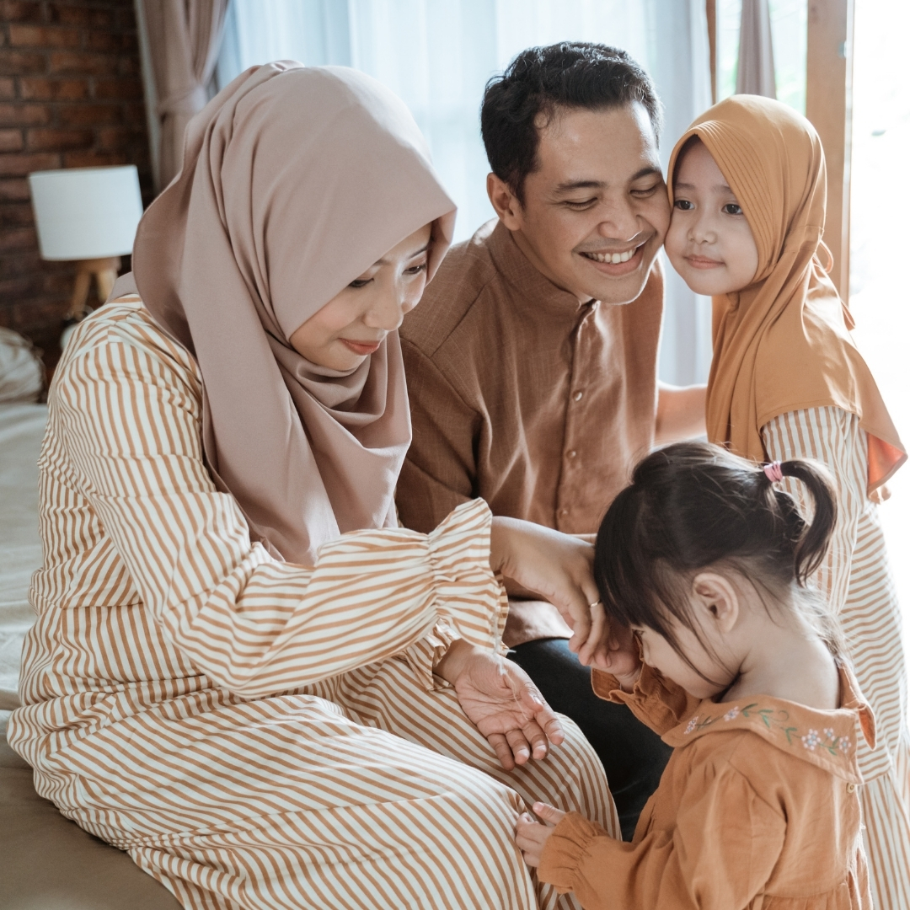
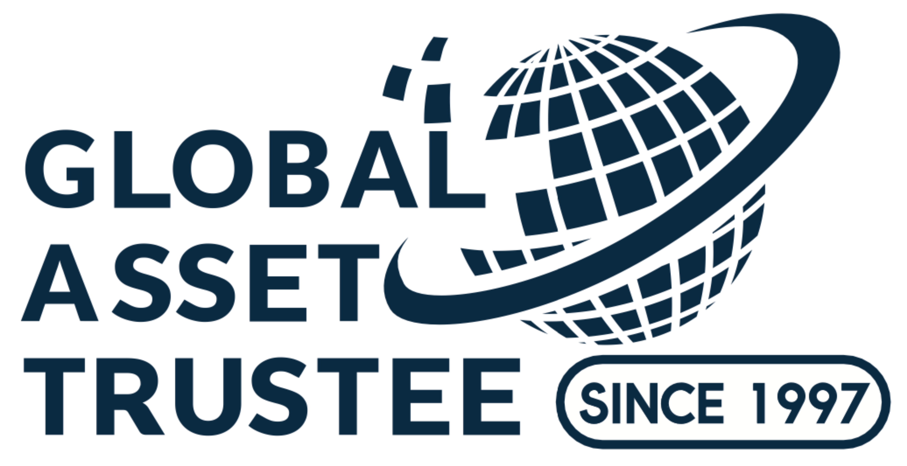

Jalan moden menuju satu kewajipan yang abadi.
Al-Aman adalah cabang perancangan legasi Islam bagi DWS2U — membawa pengalaman beberapa dekad ke era digital, agar keluarga Muslim di seluruh Malaysia dapat memenuhi tanggungjawab penting ini dengan mudah dan penuh maruah.
Membawa perancangan legasi ke era moden.
Al-Aman bermula dengan satu pemerhatian yang mudah namun mengharukan: terlalu ramai keluarga Muslim menangguhkan penyediaan Wasiat mereka — bukan kerana lalai, tetapi kerana prosesnya terasa membebankan, mahal, atau di luar jangkauan. Sedangkan, tanggungjawab ini adalah antara amalan paling penuh kasih sayang yang boleh seseorang laksanakan.
Berpandukan warisan DWS2U dalam bidang perancangan legasi, dan dengan kerjasama Global Asset Trustee — sebuah syarikat pemegang amanah profesional yang berkhidmat kepada keluarga sejak 1997 — kami membina Al-Aman sebagai platform khusus yang patuh Syariah. Ia dipandu oleh panel penasihat Syariah bertauliah, dikuasakan oleh teknologi yang mesra dan mudah, serta didirikan atas satu keyakinan: setiap keluarga Muslim berhak menunaikan tanggungjawab ini dengan penuh keyakinan dan ketenangan fikiran.
"Menjaga adalah menghormati kepercayaan yang diamanahkan kepada kami."— Janji Al-Aman

Dalam bahasa Arab, Al-Aman bermaksud keamanan, keselamatan, kesejahteraan, dan kepercayaan. Ia berkongsi akar kata dengan amanah — kepercayaan suci yang diserahkan untuk dijaga. Itulah yang kami janjikan: memelihara hasrat anda dan menyampaikannya dengan setia kepada mereka yang paling bermakna. Setiap Wasiat yang ditulis dan setiap Hibah yang dikurniakan melalui Al-Aman adalah, pada dasarnya, satu janji yang ditunaikan.
Apa yang kami pertahankan.
Amanah
Kepercayaan adalah tunjang kepada setiap hubungan yang kami jalin — dengan keluarga yang kami layani dan penasihat yang membimbing kami.
Ihsan
Kami mengejar kecemerlangan dalam setiap perincian, daripada semakan Syariah hinggalah kepada layanan yang penuh mesra dalam setiap interaksi anda.
Adil
Keadilan mendasari setiap Wasiat, setiap Hibah, dan setiap pengagihan.
Hikmah
Kami menggabungkan prinsip Islam dengan teknologi yang teliti untuk melayani anda dengan lebih baik.
Asas yang dibina atas pengalaman.
Al-Aman dibina atas warisan Global Asset Trustee — sebuah syarikat pemegang amanah profesional yang berkhidmat kepada keluarga Malaysia sejak 1997.

Al-Aman adalah sebahagian daripada Global Asset Trustee (M) Berhad — sebuah syarikat pemegang amanah profesional yang telah dengan tenang berkhidmat kepada keluarga Malaysia sejak 1997. Selama hampir tiga dekad, mereka adalah pihak yang dirujuk keluarga untuk salah satu tugas paling sensitif dalam hidup — memastikan apa yang ditinggalkan sampai ke tangan yang betul, dengan cara yang betul.
Warisan itulah asas Al-Aman. Setiap Wasiat dan Hibah yang anda buat bersama kami membawa pengalaman itu — dan disertakan dengan Wasi Profesional yang berpengalaman, tanpa kos tambahan.
Iman dan rangka kerja, dalam tangan yang berhemat.
Sebuah panel penasihat Syariah bertauliah berdiri di sebalik setiap Wasiat dan Hibah yang dibuat melalui Al-Aman.
Di sebalik setiap Wasiat dan Hibah pada Al-Aman terdapat rangka kerja yang direka dan diluluskan oleh panel penasihat Syariah kami. Daripada soalan yang kami ajukan, cara harta diagihkan, sehinggalah dokumen yang anda tandatangani — setiap langkah telah disemak oleh para ulama bertauliah. Jadi anda tidak perlu ragu-ragu sama ada perancangan anda selari dengan pegangan agama. Kerja itu telah diselesaikan untuk anda.
Bersedia untuk mengambil langkah pertama?
Sertai komuniti keluarga yang semakin ramai merancang legasi mereka bersama Al-Aman.
Mulakan